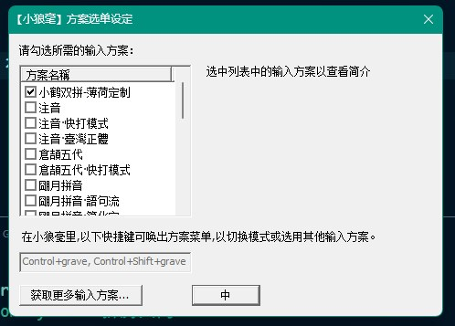

前言
oh-my-rime 输入法 是一套 rime 输入法的配置文件，能够让用户快速开始使用 rime 输入法。
本文将介绍如何安装并配置 oh-my-rime 输入法。
安装 oh-my-rime 配置文件
首先要自行安装 rime 输入法本体，看官方文档即可，此处略过。
前往 oh-my-rime 项目主页 下载整个仓库即可。可打包 zip 或者克隆。
按照官方文档打开自己 rime 的配置文件位置，如此位置有其他文件，则删除。然后复制整个仓库内的文件到这里。切换输入法到 rime 输入法，右键，重新部署。等待几秒即可看到生效。
配置词库
我使用的是双拼，在 rime 图形配置界面里面仅勾选了双拼：

打开 default.custom.yaml 可以看到启用的方案名称：
1
2
3
4
5
6
7
8
9
| customization:
distribution_code_name: Weasel
distribution_version: 0.15.0.0
generator: "Rime::SwitcherSettings"
modified_time: "Sat Jul 12 11:31:57 2025"
rime_version: 1.9.0
patch:
schema_list:
- {schema: double_pinyin_flypy}
|
官方文档说法如下：
接下来，我们看看「输入法方案配置」，方案的全局配置是default.yaml和defalut.custom.yaml；对于局部，以薄荷输入法内全拼为例：
rime_mint.schema.yaml就是一个局部配置（全拼）。rime_mint.schema.yaml内可以覆写default.yaml的配置。
创建rime_mint.custom.yaml文件，优先级高于rime_mint.schema.yaml。可以覆写rime_mint.schema.yaml的配置。
rime_mint.custom.yaml → rime_mint.schema.yaml → default.custom.yaml → default.yaml → 客户端自带的default.yaml
继续按照官方文档，结合前面获取到的方案名称，创建 double_pinyin_flypy.custom.yaml 文件，内容如下：
1
2
3
| patch:
translator/dictionary: rime_mint.custom
|
这表示词库文件将使用 rime_mint.custom.dict.yaml 文件。
新建此文件，按照官方文档，填入：
1
2
3
4
5
6
7
8
9
10
11
12
13
14
15
16
17
| ---
name: rime_mint.custom
version: "2024.02.11"
sort: by_weight
import_tables:
- dicts/custom_simple
- dicts/rime_ice.8105
- dicts/rime_ice.41448
- dicts/rime_ice.base
- dicts/rime_ice.ext
- dicts/other_kaomoji
- dicts/other_emoji
- dicts/rime_ice.others
- dicts/mine_rime_merged_20250418
...
|
其中 mine_rime_merged_20250418 是我自己创建的词库，按格式填入即可。
导航到 dicts 文件夹，创建 mine_rime_merged_20250418.dict.yaml 文件，内容如下：
1
2
3
4
5
6
7
8
9
10
11
12
| ---
name: mine_rime_merged_20250418
version: "2025-07-12"
sort: by_weight
...
艾米莉亚 ai mi li ya 1
爱蜜莉雅 ai mi li ya 1
艾妮丝菲亚 ai ni si fei ya 1
帕雷提亚 pa lei ti ya 1
尤菲莉亚 you fei li ya 1
玛赞塔 ma zan ta 1
伊莉雅 yi li ya 1
|
词库创建用的是深蓝词库转换器
踩坑点
- 看好自己的配置文件。我用的是 double_pinyin_flypy，那么去修改 rime_mint.custom.dict.yaml 是没用的。
- 词库扩展名是 .dict.yaml，不是 .yaml。
- 词库内每一行中文和拼音之间用制表符分隔，不是空格。特别注意不要让文本编辑器自动格式化。
外观配置
官方文档说法如下：
如果是想自定义外观展示的，那么就设置「输入法的应用配置」，macOS上就是squirrel.yaml和squirrel.custom.yaml；而Windows上就是weasel.yaml和weasel.custom.yaml。
编辑 weasel.yaml 文件即可修改外观。关于换皮肤，配置文件的注释里面写了两个网站用于生成皮肤：
编辑 weasel.yaml → preset_color_schemes 字段即可。我用 catppuccin 配色创建了一个：
1
2
3
4
5
6
7
8
9
10
11
12
13
14
15
16
17
18
19
20
21
22
23
24
25
26
| preset_color_schemes:
catppuccin:
name: 名字
author: 作者
back_color: 0x463430
shadow_color: 0x33000000
border_color: 0x00000000
text_color: 0xF5D0C6
hilited_text_color: 0xEEAA8C
hilited_back_color: 0x342623
hilited_shadow_color: 0x00000000
hilited_mark_color: 0x00F5D0C6
hilited_label_color: 0xF5D0C6
hilited_candidate_text_color: 0x89D1A6
hilited_comment_text_color: 0x90C8E5
hilited_candidate_back_color: 0x00000000
hilited_candidate_border_color: 0x00000000
hilited_candidate_shadow_color: 0x00000000
label_color: 0xF5D0C6
candidate_text_color: 0xF5D0C6
comment_text_color: 0xCEADA5
candidate_back_color: 0x00000000
candidate_border_color: 0x00000000
candidate_shadow_color: 0x00000000
prevpage_color: 0x00FFFFFF
nextpage_color: 0x00FFFFFF
|